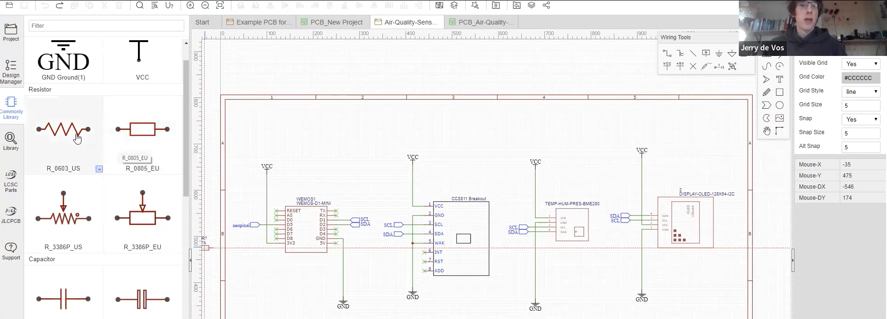
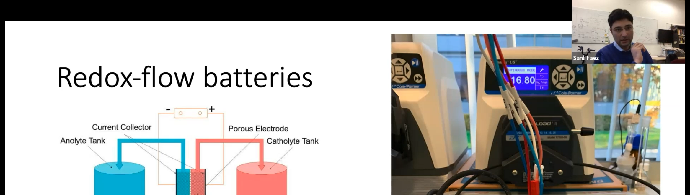
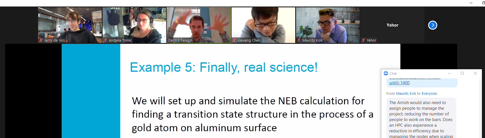
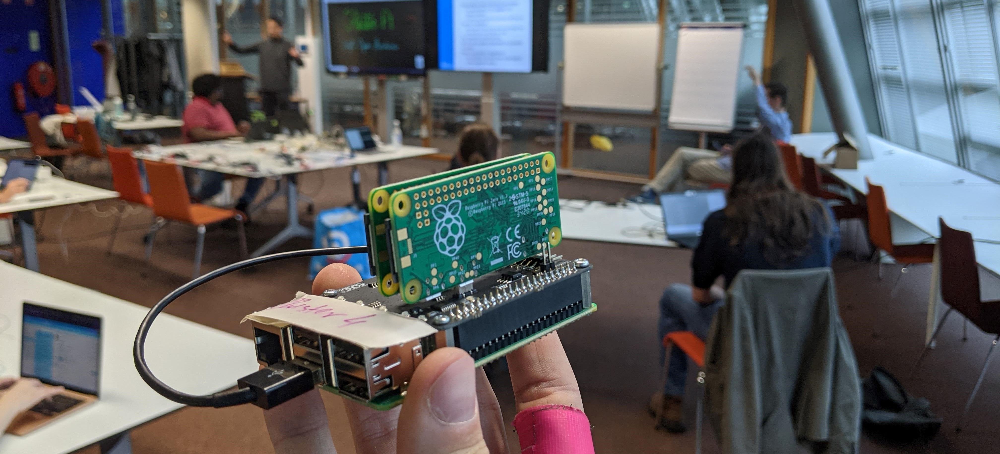
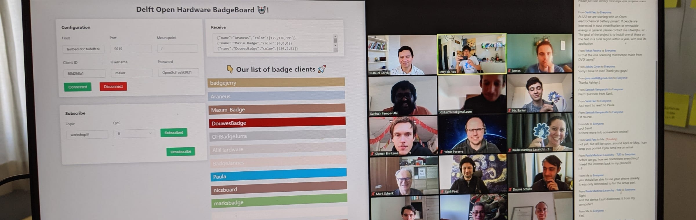
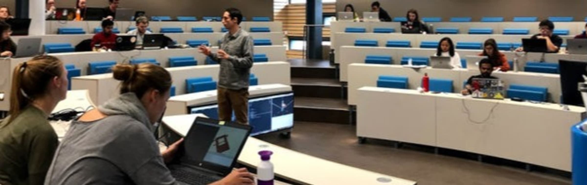
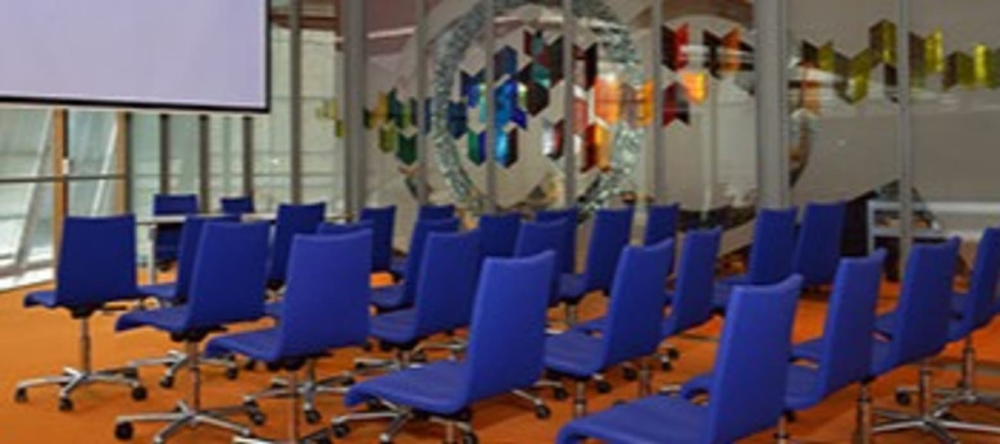

Events¶
2022 May 20 - Seminar:¶
2022 April 22 - Workshop: 3D modelling and printing¶
2022 March 25 - Seminar: Open!Next¶
2022 Feb 18 - Workshop: Making your own PCB ⚡¶

2022 Jan 21 - Seminar: Opening up a flow battery by Sanli Faez🔋¶

2021 Nov 19 - Pi Cluster Workshop Part II 🍰¶

2021 Oct 01 - Pi Cluster Workshop 🥧¶

2021 Feb 11 - Hardware sessions @ OSF2021NL👨💻¶

2020 Feb 21 - Third Meetup 👋¶

2019 Nov 29 - Second Meetup 😎¶
